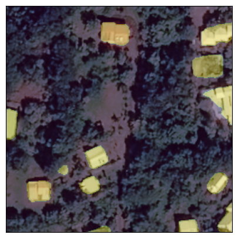
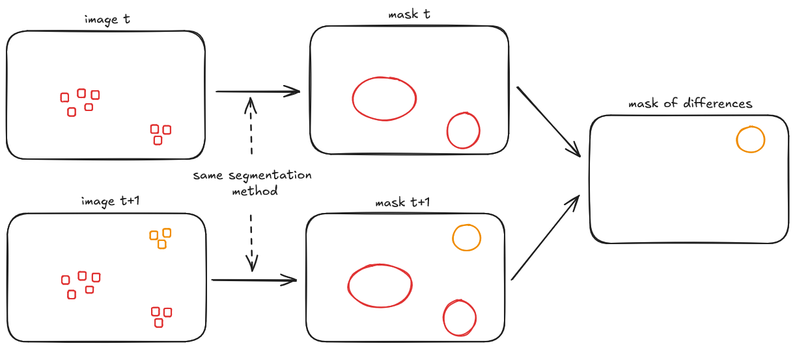
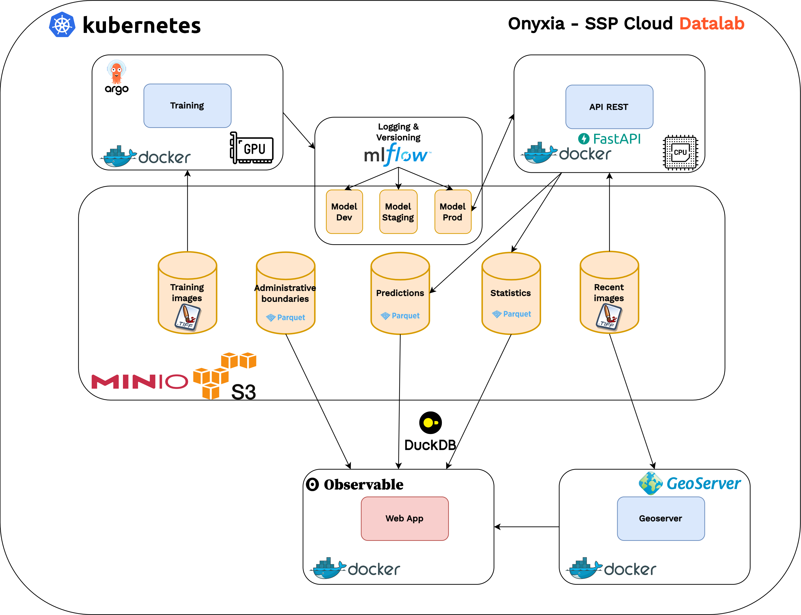

Enhancing census surveys using satellite imagery
Raya Berova, Thomas Faria, Clément Guillo
12 March 2025
Outline
1️⃣ Introduction
2️⃣ Methodology
3️⃣ Data
4️⃣ Results
5️⃣ From experimentation to production?
6️⃣ Discussion
Context
- Insee maintains a register of localized buildings (RIL)
- Comprehensive housing data for cities with over 10k inhabitants 🏙️
- Used to create sampling frames for census surveys 📋
- The RIL quality is good in metropolitan France ✅…
- …but France also includes overseas territories (OTs)! ğŸŒ
- There, data quality is significantly lower âš ï¸
Census in Overseas Territories
A cartographic survey is conducted in OTs before each census
Critical context, particularly in Mayotte and French Guiana:
- Local authorities question official statistics
- Rapid urban development
- Difficult field conditions
Requires significant work and is highly costly 💰
Can we use satellite imagery to optimize census processes in OTs? 🛰️
Our use cases
- Pre-cartographic survey:
- Identify priority areas for fieldwork 🎯
- Detect building changes since last survey 🏗️
- Perform temporal comparisons using historical and recent imagery 📆
- Post-cartographic survey:
- Automated change detection 🤖
- Analysis of land-use evolution 🌳➡️🏘️
- Assist population estimates in OTs 📊
- Extraordinary use case: Rapid response after devastating tropical cyclone “Chido”
Presentation Outline
1️⃣ Introduction
2️⃣ Methodology
3️⃣ Data
4️⃣ Results
5️⃣ From experimentation to production?
6️⃣ Discussion
Semantic segmentation
Pleiades © CNES_2022, Distribution AIRBUS DS
Training a segmentation model
- Model trained for automatic segmentation from annotated examples
- Requirements:
- Satellite image collection 🛰️
- Production of annotations (building footprints or land cover, if available) ğŸ“
- Model learns to reproduce annotations from images aiming to generalize on new images 🎯
From segmentation to change detection

Model used
- Model architecture 🧩:
- Backbone: SegFormer (MiT)
- Encoder: Transformer-based (efficient self-attention, no positional encoding) ⚙️
- Decoder: Lightweight MLP head ✨
- Why SegFormer? 🚀:
- No complex decoders → Efficient & scalable ⚡
- Captures local & global context → High accuracy 🎯
- No positional embeddings → Improved resolution generalization ğŸ“
- Fine-tuned on our dataset 🗃️
Presentation Outline
1️⃣ Introduction
2️⃣ Methodology
3️⃣ Data
4️⃣ Results
5️⃣ From experimentation to production?
6️⃣ Discussion
Pléiades (Very High Resolution) 🛰️
- Characteristics:
- 0.5m × 0.5m spatial resolution 🔍
- 3 spectral bands (RGB) 🎨
- Free archives, on-demand acquisition (6-8 months per department), Airbus © licensing 📅
- Image size: 1 km² (2000 × 2000 pixels) 🖼️
Sentinel-2 (High Resolution) 🛰️
- Characteristics:
- 10m × 10m spatial resolution 🔍
- 13 spectral bands 🎨
- 5-day revisit time, free access 🔄🆓
- Image size: 6.25 km² (250 × 250 pixels) 🖼️
Reference Data (COSIA)
- Significant project by IGN colleagues 👏
- Land cover generated by AI as vector polygons for France and OTs 🗺️
- Based on IGN aerial photography at 20cm (!!) resolution
- Used as label for training data despite potential temporal misalignment
Presentation Outline
1️⃣ Introduction
2️⃣ Methodology
3️⃣ Data
4️⃣ Results
5️⃣ From experimentation to production?
6️⃣ Discussion
4️⃣ Results
Interactive Dashboard 📊
🌟 A picture is worth a thousand words! 🌟
👉 Access the interactive app: Click here 🚀
Presentation Outline
1️⃣ Introduction
2️⃣ Methodology
3️⃣ Data
4️⃣ Results
5️⃣ From experimentation to production?
6️⃣ Discussion
5️⃣ From experimentation to production?
Processing Pipeline 🛠️
Application Architecture 🧩

Challenges & Perspectives
- High maintenance costs due to technical complexity 💸
- Need for specialized skills 🧑‍💻
- Complex technical environment due to:
- Large data volumes 🗃️
- High computational requirements ⚡
- Reproducibility requirements ♻️
- Promising initial results supporting cartographic surveys ✅🗺️
- Potential improvements identified for each pipeline stage 🔧